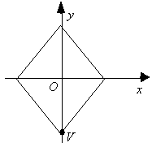

Solution: Calculating the distance between
V
and the origin yields
√(2 − 0)2 + (− 2 − 0)2 = √4 + 4 = √8 = 2√2. Since the square is rotated about the
origin, the distance between the origin and
V is fix.
Hence,
the new
y-coordinate of
V is
−2√2. The diagram below
illustrates the position of
V after the rotation.
The
answer is B.
